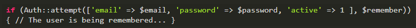

Laravel the best framework in PHP
Laravel is a young framework with a great future. It has a community full of energy, attractive documentation of clear and complete content; and, in addition, it offers the necessary functionalities to develop modern applications easily and safely. In 2011 its creator, Taylor Otwell, showed it to the world for the first time. Therefore, it is a framework with a fresh and modern approach; since he is quite young. It is made for MVC architecture and resolves current needs such as event handling and user authentication. In addition, it has a modular and extensible code through a package manager and a robust support for database management. It does not matter if you are an expert in PHP or if they are your first steps; when you know it, you will know that Laravel is the framework you were looking for for your PHP projects. In this article, we are going to talk about some of the reasons that make Laravel the best PHP framework today.
Modular and extensible
Laravel is modular and extensible. This means that it allows you to add everything you need through its Packalyst directory that has more than 5,500 packages. This with the aim that you always find what you need.
Micro-services and APIs
Lumen is a micro-framework derived from Laravel with a focus on lean development. That is, it allows you to easily and quickly develop high performance micro-services and APIs for your projects. Lumen integrates all Laravel features with minimal configuration and allows you to migrate to the complete framework by simply copying the code into a Laravel project.

HTTP Routing
Laravel has a fast and efficient routing system, similar to the one used in Ruby on Rails. This allows us to relate the parts of our application with the routes that the user enters in the browser.
HTTP Middleware
Your applications will be shielded using Middleware; since it is responsible for analyzing and filtering HTTP calls on your server. You can install it to be responsible for verifying that it is a registered user, to avoid Cross-Site-Scripting (XSS) type problems and other security measures.
Cache
Your applications will have a robust caching system which you can adjust so that your application loads faster and, thus, offer the best possible experience to your users.
Authentication
Security is very important. Laravel comes ready to implement user authentication natively and includes the option to "remember" the user. It also allows you to include additional parameters, which will ensure, for example, if you are an active user.
Integration with Stripe
Laravel Cashier includes everything you need to integrate your development with this collection service. In addition, this can be synchronized and integrated with the user authentication system. So you do not have to worry about how to integrate a collection system to your development.
Automated tasks
Elixir es una API de Laravel que nos permite definir tareas de Gulp con las que podemos definir el uso pre-procesadores para comprimir nuestro CSS y JavaScript .

Encryption
A secure application needs to be able to encrypt your data. With Laravel you have everything you need to start using OpenSSL security and AES-256-CBC encryption. Additionally, all encrypted values are signed by a message authentication code that detects if the encrypted message was tampered with.
Events
Defining, recording and listening to events in your application is very simple. The listen property of EventServiceProvider contains a list of all events registered in your application. In addition, it uses as a key the name of the event and as a value the listeners registered to it.
Pagination
Paging is very easy with Laravel because it generates a range of links according to the current page in the user's browser.
Object-Relational-Map (ORM)
Laravel includes a layer for database management that has an ORM called Eloquent. This, in addition, works perfectly with PostgreSQL.
Unit Testing
The development of Unit Testing is a task that consumes a considerable amount of time. But it gives us the certainty that our application will work without problems. Laravel includes methods to perform Unit Testing using PHPUnit.
Task queue (Queues)
Laravel offers us the option of executing long and complex processes in the background using task lists. This allows us to work asynchronously with certain processes that are not necessary to continue with the user's navigation.